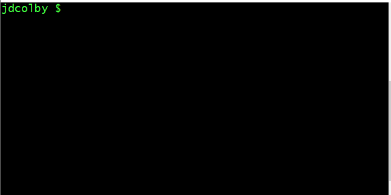

Git
GitConfigure your global Git environmentCreate a new project folderCreating a new git repoCreate a new fileChecking the state of your repo using statusCreating a snapshot of your project folder: add and commitStage: addOther add optionsCommit: commitCreating a second snapshot of your repoAlternative commit optionUsing log to list snapshots.Making a few more changes to our repositoryReverting to an earlier state of a repoReverting back to the most recent commitCreating a new branchMoving back and forth between branchesMerging branchesOverwriting files in a mergeCreating a new branchMerge botanist into mainMerge conflictsCreate a nutritionist branchMake changes to mainMerging into a branch that is ahead of a commitFixing merge conflicts
Git can be run in command line (Bash) environment or in a GUI environment. This workshop will work exclusively in the command environment.
Bring up the git shell (this may be listed as the Git Bash application on Windows and it may be accessed via your Terminal application on the Mac).

Configure your global Git environment
If you haven't used Git on your computer yet, you will need to configure a few settings: Your name and your contact information (email address). This info is used to keep track of the author behind any changes made to a Git repository. This is not necessarily tied to an existing account, you can assign and name/email address you see fit.
Type the following while replacing Jane Doe and jdcolby@colby.edu with your name and email address respectively. (Do not type the $ character! This is only referencing the existing prompt in your terminal).
xxxxxxxxxx$ git config --global user.name 'Jane Doe'$ git config --global user.email 'jdcolby@some_address.edu'To check your settings, type:
xxxxxxxxxx$ git config --global --listYou should see something like:
user.name=jdcolby user.email=jdcolby.com
Note that all Git operations start with the git command.
We will also take the opportunity to change the default name of the main branch from master to main. Doing so will parallels GitHub's adoption of main following the Open Compute Project's Inclusion and Openness guidelines.
xxxxxxxxxx$ git config --global init.defaultBranch mainCreate a new project folder
A Git repository (repo for short) usually consists of project folder. You can create a Git repo in an existing project folder, or from a newly created folder. In this exercise, you'll create a new empty folder that you'll call proj1. You can do this in a file manager window, or via the Bash command line. In this working example, we'll use Bash to create the folder under the user's home directory.
xxxxxxxxxx$ mkdir proj1Next, we'll jump into the project folder using the cd (change directory) command.
xxxxxxxxxx$ cd proj1In Bash, you can check the contents of a folder using the ls function. We'll add the -a option to list any hidden files and/or folder.
xxxxxxxxxx$ ls -aGiven that this is a newly created folder, you should only see a few dots
xxxxxxxxxx. ..Creating a new git repo
Now that we have a project folder, we can create a new git repo in it.
xxxxxxxxxx$ git initIf the project folder is empty, Git will return the following message:
xxxxxxxxxxInitialized empty Git repository in C:/Users/jdcolby/proj1/.git/Now lets check the folder's content. Don't forget to add the -a option to list hidden folders/files.
xxxxxxxxxx$ ls -aYou should now see .git added to the folder. The dot . in front of its name indicates that it's a *hidden" file.
xxxxxxxxxx. .. .gitWe'll add another option to ls to differentiate files from folders.
xxxxxxxxxx$ ls -aFxxxxxxxxxx./ ../ .git/.git is a hidden folder. This is the guts of this folder's git repo. If you were to remove this folder, you would lose all tracked changes to the current project folder, so this folder you should not be touched!
Create a new file
Next, you'll create a new file called fruits.txt in the proj1 folder. Feel free to use any plain text editor using a GUI (such as TextEdit on Macs, or Notepad on Windows) or a command line application such as vim or nano.
In this newly created file, add the following text (make sure that each word is placed on its own line, i.e. use a carriage return).
xxxxxxxxxxapplepear
Save, then close the file.
Checking the state of your repo using status
One of the most frequently used Git commands in a Git session is status. This command will identify what files/folders have been modified or created since the last saved state of the repo.
xxxxxxxxxx$ git statusYou should see the following output.
xxxxxxxxxxOn branch mainNo commits yetUntracked files:(use "git add <file>..." to include in what will be committed)fruits.txtnothing added to commit but untracked files present (use "git add" to track)
The above message indicates that git recognizes that a new file was created. But it has not been committed to a snapshot.
Creating a snapshot of your project folder: add and commit
If at any point in your project's development you wish to create a snapshot of your project folder, you will make use of Git's add and commit functions. Both functions serve different purposes but are more often than not used together when creating snapshots. In its basic use, add identifies which files and/or folders are to be stored in a snapshot and commit grabs the staged elements and commits those elements to a snapshot that is identified using a timestamp and a unique hash identifier.
Stage: add
Let's first stage the fruits.txt file.
xxxxxxxxxx$ git add fruits.txtDepending on the operating system used, you might see a warning message regarding line/carriage returns (e.g. LF will be replaced by ...). You can ignore this warning.
Now let's check the status:
xxxxxxxxxx$ git statusxxxxxxxxxxOn branch mainNo commits yetChanges to be committed:(use "git rm --cached <file>..." to unstage)new file: fruits.txt
The message indicates that the fruits.txt file has been staged but has not yet been committed to a snapshot.
Other add options
If you have more than one item to stage, you can add these items on the same line separated by a space, e.g.:
xxxxxxxxxx$ git add fruits.txt file2.txt file3.txt ...If you want to include all files and folders in your current project folder in the staging area, simply use the
-alloption:xxxxxxxxxx$ git add --all
Commit: commit
When you have identified the files to be committed, the final step is to execute the commit command. The commit function takes as argument a message which allows you to add a brief comment to the commit for future reference (comment should be less than 80 characters).
In this example, you will commit the staged files and append the message "initial commit".
xxxxxxxxxx$ git commit -m "initial commit"You might see the following message (the hash number will differ on your machine):
xxxxxxxxxx[main (root-commit) 246dd78] initial commit1 file changed, 2 insertions(+)create mode 100644 fruits.txt
Now check the status once again:
xxxxxxxxxx$ git statusxxxxxxxxxxOn branch mainnothing to commit, working tree clean
The above message indicates that Git has a snapshot of the most recent state of your project folder.
Creating a second snapshot of your repo
Next, you will make changes to the fruits.txt file, then create a snapshot of this project folder's modified state.
Using your text editor of choice, add orange to the file.
xxxxxxxxxxapplepearorange
Save and close the text file.
Now check the status of your repo.
xxxxxxxxxx$ git statusxxxxxxxxxxOn branch mainChanges not staged for commit:(use "git add <file>..." to update what will be committed)(use "git restore <file>..." to discard changes in working directory)modified: fruits.txtno changes added to commit (use "git add" and/or "git commit -a")
Git recognizes that the content's of fruits.txt has changed since the last snapshot.
Next, you will create a second snapshot of the project folder.
xxxxxxxxxx$ git add fruits.txt$ git commit -m "added orange"At this point, you've commit two snapshots of your current repo. Next, you will learn how to list the different snapshots in your Git repo.
Alternative commit option
If you are committing an update to an existing file, you can bypass the git add ... step and simply add the -a option to the git commit ... command:
xxxxxxxxxx$ git commit -am fruits.txt
Using log to list snapshots.
To view all snapshots in a Git repo, use the log function.
xxxxxxxxxx$ git logxxxxxxxxxxcommit 78c929e45f935a6e820d427e8baab6cb102b0ac0 (HEAD -> main)Author: Jane Doe <jdcolby@colby.edu>Date: Fri May 28 08:50:03 2021 -0400addded orangecommit 246dd78d4c151e68df76e298528befd8c7aff091Author: Jane Doe <jdcolby@colby.edu>Date: Fri May 28 08:40:36 2021 -0400initial commit
You should see the two snapshots listed in descending chronological order. Each commit lists the author and timestamp associated with the commit (the author and email address are those you defined a the beginning of this tutorial). You'll also see the comment you added to each commit. Note that properly commented commits are important to help identify the different snapshots.
Making a few more changes to our repository
To make this exercise a bit more interesting, we'll create a new file called veggies.txt and populate its content with the following text:
xxxxxxxxxxkalespinachtomato
Save and close the file, then stage and commit the changes.
xxxxxxxxxx$ git add veggies.txt$ git commit -m "added veggies list"Now let's check the log.
xxxxxxxxxx$ git logxxxxxxxxxxcommit c3478ed01ea05a25cafb19792db3206f03f6e4f2 (HEAD -> main)Author: Jane Doe <jdcolby@colby.edu>Date: Fri May 28 08:54:37 2021 -0400 added veggies listcommit 78c929e45f935a6e820d427e8baab6cb102b0ac0Author: Jane Doe <jdcolby@colby.edu>Date: Fri May 28 08:50:03 2021 -0400 addded orangecommit 246dd78d4c151e68df76e298528befd8c7aff091Author: Jane Doe <jdcolby@colby.edu>Date: Fri May 28 08:40:36 2021 -0400 initial commit
We now have three commits. How often you chose to commit a snapshot of your project is up to you. But it's usually good practice to grab snapshots at key developments in your work.
It's not uncommon to end up with scores if not hundreds of commits. This makes navigating through the logs challenging. An alternative is to reduce each commit to a single line in the log output. This can be done with the --oneline option.
xxxxxxxxxx$ git log --onelinexxxxxxxxxxc3478ed (HEAD -> main) added veggies list78c929e addded orange246dd78 initial commitNote that not only has each commit been reduced to as single line, but the 40 character hash string used to identify each commit has been reduced to just 7 characters. For example, the initial commit's hash string of 246dd78d4c151e68df76e298528befd8c7aff091 is now reduced to 246dd78. (Recall that your hash strings will differ from those shown in this tutorial).
Reverting to an earlier state of a repo
Now that you have a snapshots to work with, you will learn how to revert back to an earlier state in your project.
Let's review the list of commits.
xxxxxxxxxx$ git log --onelinexxxxxxxxxxc3478ed (HEAD -> main) added veggies list78c929e addded orange246dd78 initial commit
If you want to revert back to the project's state before you added the veggies.txt file, you will first need to note the hash string associated with that commit. In this working example, the hash string associated with the commit of interest is 78c929e. So to revert to that state, type:
xxxxxxxxxx$ git checkout 78c929eYou'll see a message indicating that you are in a "detached HEAD" state. This is simply stating that you are no longer viewing the most recent state of your repo.
Look at the contents of your project folder. The veggies.txt file is gone. You are now viewing the project folder in its earlier state. But be careful not to make any edits in this snapshot, doing so will force a new branch which is a topic we'll cover later.
Reverting back to the most recent commit
Now lets revert back to our most recent snapshot. To do so, we'll need the hash string.
xxxxxxxxxx$ git log --onelinexxxxxxxxxx78c929e (HEAD) addded orange246dd78 initial commit
Note that all commits beyond this repo are no longer listed--this includes the most recent state of our repo. To view all snapshots, forward and backwards, add the --all option.
xxxxxxxxxx$ git log --oneline --allxxxxxxxxxxc3478ed (main) added veggies list78c929e (HEAD) addded orange246dd78 initial commit
In this example, the hash associated with the most recent commit is c3478ed. So the command needed to revert back to this state is:
xxxxxxxxxx$ git checkout c3478edNow check the status to make sure that all is well.
xxxxxxxxxx$ git statusxxxxxxxxxxHEAD detached at c3478ednothing to commit, working tree cleanThe message indicates that there is nothing to commit, but it's also indicating that the HEAD is "detached" at the current commit. This is not a message we would have seen had we not gone through the process of checking out commits. The message is indicating that if we were to make any changes to the current snapshot, those changes would not be associated with the current main branch. For now, we can ignore this warning since we have not made any changes and force the HEAD back to the main branch.
xxxxxxxxxx$ git checkout mainxxxxxxxxxx$ git statusxxxxxxxxxxOn branch mainnothing to commit, working tree clean
Creating a new branch
So far, we've worked off of a single branch: main. Traditionally, this is your production branch and it may be the only branch in your repo. But there may be times when you want to create a spinoff of your project. For example, you might want to explore a different analysis technique without impacting the "original" workflow, or you might be collaborating with a co-author whereby she is tasked with tackling a specific part of the project--having her work on a separate branch avoids the risk of her modifying the project's core workflow.
In this exercise, you will go back the second commit (the one before you created the veggies.txt file) and create a new branch that you'll name sweets whereby you will create a desserts.txt file.
xxxxxxxxxx$ git checkout 78c929eLet's run a log command.
xxxxxxxxxx$ git log --oneline -allxxxxxxxxxxc3478ed (main) added veggies list78c929e (HEAD) addded orange246dd78 initial commit
Our HEAD is now at the desired commit. Before we make any changes to this current snapshot, we will spinoff a new branch so as not to modify the contents of the current main branch.
xxxxxxxxxx$ git switch -c sweetsLet's rerun the log command.
xxxxxxxxxx$ git log --oneline -allxxxxxxxxxxc3478ed (main) added veggies list78c929e (HEAD -> sweets) addded orange246dd78 initial commit
You should now see HEAD attached to the new branch named sweets.
Next, add a desserts.txt file and populate it with the following list of desserts.
xxxxxxxxxxeclairangel cakeoreo cookies
Next, stage and commit the changes.
xxxxxxxxxx$ git add desserts.txt$ git commit -m "added desserts list"Now check the log.
xxxxxxxxxx$ git commit -mgit log --oneline --allxxxxxxxxxxe3c2c87 (HEAD -> sweets) added desserts listc3478ed (main) added veggies list78c929e addded orange246dd78 initial commit
Another option that can be added to the log command is --graph. This helps visualize where branches spin off of the main branch.
xxxxxxxxxx$ git commit -mgit log --oneline --all --graphxxxxxxxxxx* e3c2c87 (HEAD -> sweets) added desserts list| * c3478ed (main) added veggies list|/* 78c929e addded orange* 246dd78 initial commit
Moving back and forth between branches
You can jump back and forth between branches using the checkout command. But first, lets list all available branches in out repo.
xxxxxxxxxx$ git branchxxxxxxxxxxmain* sweets
We currently have two branches: main and sweets. The asterisk * indicates the branch we are currently in.
We can also tell which branch we are in using the log command.
xxxxxxxxxx$ git log --oneline --allxxxxxxxxxxe3c2c87 (HEAD -> sweets) added desserts listc3478ed (main) added veggies list78c929e addded orange246dd78 initial commit
HEAD is pointing to the sweets branch.
To jump back to the main branch, type:
xxxxxxxxxx$ git checkout mainLets check the log.
xxxxxxxxxx$ git log --oneline --allxxxxxxxxxxe3c2c87 (sweets) added desserts listc3478ed (HEAD -> main) added veggies list78c929e addded orange246dd78 initial commit
Head is now pointing to the main branch.
At this point, each branch can be worked on without impacting one another.
Merging branches
At some point in your project, you might choose to combine changes made in a branch into the main (production) branch. This is accomplished using the merge command.
The first step is to make sure that you are in the branch you want to merge to (main in this working example). We can use the log command or the branch command.
xxxxxxxxxx$ git branchxxxxxxxxxx* mainsweets
Now that we've confirmed that we are in the branch we want to merge into, we can now call the merge command.
xxxxxxxxxx$ git merge sweetsThis action might bring up a shell text editor such as vim or nano. The following is an example of a vim editor.
xxxxxxxxxxMerge branch 'sweets'# Please enter a commit message to explain why this merge is necessary,# especially if it merges an updated upstream into a topic branch.## Lines starting with '#' will be ignored, and an empty message aborts# the commit.~~.git/MERGE_MSG [unix] (13:18 28/05/2021) 1,1 All
Merging a branch into another branch is another form of a commit (e.g. we are making changes to the main branch). The editor allows you to add a detailed comment explaining the reason for this merge. You don't have to enter anything in which case the comment associated with the merge will default to Merge branch 'sweets' (the first line in the text file).
If the default editor is vim, click on the ESC key, then type :q then click on the ENTER or RETURN key to exit the editor (make sure to include the : syntax in the :q command).
Check the log (add the --graph option).
xxxxxxxxxx$ git log --oneline --all --graph xxxxxxxxxx* 27a7bc1 (HEAD -> main) Merge branch 'sweets'|\| * e3c2c87 (sweets) added desserts list* | c3478ed added veggies list|/* 78c929e addded orange* 246dd78 initial commit
The output mimics the workflow adopted in this repo (i.e. the creation of a sweets branch, then the merge). Recall that the log is displaying the order of operations in descending order.
You'll also note that the merge created a new commit HASH (27a7bc1 in this working example).
At this point, your project folder has all three files: desserts.txt, fruits.txt, and veggies.txt.
Overwriting files in a merge
The merge performed in the last exercise offered a best case scenario: one that did not involved an overwrite. In other words, we were not overwriting an existing file in main. In this exercise, we will create a scenario where the merge will lead to an overwrite.
Creating a new branch
In this step, you will create a new branch off of the tip of main that we'll call botanist. This branch will modify both the fruits.txt and veggies.txt files by moving the tomato item from one to the other (this to satisfy a botanist's view of a tomato).
You will first create a new branch that you will name botanist (make sure that you are doing this at the tip of the main branch). This time, you will use the branch command to create this new branch.
xxxxxxxxxx$ git branch botanistxxxxxxxxxx$ git checkout botanistNow that you are in the botanist branch, add tomato to the fruits.txt file and remove that entry from the veggies.txt file.
fruit.txt:
xxxxxxxxxxapplepearorangetomato
veggies.txt:
xxxxxxxxxxkalespinach
Save the files, then stage and commit these changes.
xxxxxxxxxx$ git add fruits.txt veggies.txt$ git commit -m "fixed tomato"Check the log.
xxxxxxxxxx$ git log --oneline --all xxxxxxxxxxbffc4a2 (HEAD -> botanist) fixed tomato27a7bc1 (main) Merge branch 'sweets'e3c2c87 (sweets) added desserts listc3478ed added veggies list78c929e addded orange246dd78 initial commit
Merge botanist into main
Next, we'll merge this branch into main. But first, we need to jump back into main.
xxxxxxxxxx$ git checkout mainNow perform the merge.
xxxxxxxxxx$ git merge botanistxxxxxxxxxxUpdating 27a7bc1..bffc4a2Fast-forwardfruits.txt | 1 +veggies.txt | 1 -2 files changed, 1 insertion(+), 1 deletion(-)
The message from this merge differs from the previous merge performed in this tutorial. Here, the merge lists the files that were modified along with the type of modification: an insertion of a line in fruits.txt, 1 +, and a deletion of a line in veggies.txt, 1-.
Now check the log. We'll add the --graph option to view branch paths.
xxxxxxxxxx$ git log --oneline --all --graphxxxxxxxxxx* bffc4a2 (HEAD -> main, botanist) fixed tomato* 27a7bc1 Merge branch 'sweets'|\| * e3c2c87 (sweets) added desserts list* | c3478ed added veggies list|/* 78c929e addded orange* 246dd78 initial commit
Notice how the main branch adopted the same hash id as that of the last commit of the botanist branch. This makes sense given that this last main snapshot is identical to that of the last commit in botanist.
Merge conflicts
A scenario you might come across is one where the merge will generate a conflict if the main branch was modified after an alternate branch was spun off of the main branch. An example of such a scenario follows.
Create a nutritionist branch
From the main branch, create a nutritionist branch then jump into that branch.
xxxxxxxxxx$ git branch nutritionist$ git checkout nutritionistIn this new branch, you will move the tomato back to the veggies.txt file thus removing it from the fruits.txt (nutritionist have no qualms referring tomatoes as veggies).
Save the files, then stage and commit the changes.
xxxxxxxxxx$ git add fruits.txt veggies.txt$ git commit -m "nutritionist take on tomatoes"Make changes to main
Before merging nutritionist into main, we will make changes to main. Doing so will move main ahead of nutritionist in the workflow.
xxxxxxxxxx$ git checkout mainIn main, you will modify the veggies.txt file by adding a broccoli entry. The veggies.txt file should look like this:
xxxxxxxxxxkalespinachbroccoli
Save, then stage and commit the file.
xxxxxxxxxx$ git add veggies.txt$ git commit -m "added spinach"Now check the log.
xxxxxxxxxx$ git log --oneline --all --graphThe branchmain is now ahead of the nutritionist branch. This will create a conflict when merging as will be shown next.
Merging into a branch that is ahead of a commit
While remaining in the main branch, merge nutritionist.
xxxxxxxxxx$ git merge nutritionist xxxxxxxxxxAuto-merging veggies.txtCONFLICT (content): Merge conflict in veggies.txtAutomatic merge failed; fix conflicts and then commit the result.
The message indicates that there is a conflict with the veggies.txt file. This is because the nutritionist branch does not have the latest version of main's veggies.txt file. This prevented the merge from completing successfully. However, the message is misleading since it suggests that nothing has changed in main. Let's see if this is indeed the case:
xxxxxxxxxx$ git statusxxxxxxxxxxOn branch mainYou have unmerged paths.(fix conflicts and run "git commit")(use "git merge --abort" to abort the merge)Changes to be committed:modified: fruits.txtUnmerged paths:(use "git add <file>..." to mark resolution)both modified: veggies.txt
Changes have been made in main as a result of the attempted merge. It recognizes that fruits.txt was modified in nutritionist and is ready to be committed (recall that we did not make any changes to fruits.txt in main since spinning off the nutritionist branch, so Git does not see a conflict). It also recognizes that veggies.txt was modified in nutricitonist but it also recognizes that it was modified in main after we spun off nutristionist. Sot it's not sure which version we want to keep. Since Git wants us to conflict before finalizing the merge with a commit.
Fixing merge conflicts
The message from the status output suggests that there is a conflict with veggies.txt. To fix the conflict, we need to open the veggies.txt file in an editor. You can use the built-in bash editor, or a GUI editor.
xxxxxxxxxxkalespinach<<<<<<< HEADbroccoli=======tomato>>>>>>> nutritionist
There are markers added to the file. They are showing the “before-the-merge” state of the file and the suggested “after-the-merge” fix to the conflict.
Everything between <<<<<<< HEAD and ======= is what we currently have in main which is at the HEAD of the commit tree.
xxxxxxxxxx<<<<<<< HEADbroccoli=======
Everything between ======= and >>>>>>> nutritionist is what we currently have in thenutritionist branch.
xxxxxxxxxx=======tomato>>>>>>> nutritionist
Git is allowing us to make changes to the script to reflect what we want in the final version of the file. We'll choose to keep both edits. So all we need to do is remove the markers as follows:
xxxxxxxxxxkalespinachbroccolitomato
Next, we need to add veggies.txt to the staging area (recall that fruits.txt has already been staged for us given that it did not have a conflict), then commit the stages files
xxxxxxxxxx $ git add veggies.txt $ git commit -m "combined branch edits"Now check the log.
xxxxxxxxxx$ git log --oneline --all --graphxxxxxxxxxx* fc4eab8 (HEAD -> main) combined branch edits|\| * a92d0ac (nutrionist) nutritionist take on tomatoes* | 122d40e added broccoli|/* bffc4a2 (botanist) fixed tomato* 27a7bc1 Merge branch 'sweets'|\| * e3c2c87 (sweets) added desserts list* | c3478ed added veggies list|/* 78c929e addded orange* 246dd78 initial commit
 Manny Gimond (2021)
Manny Gimond (2021)